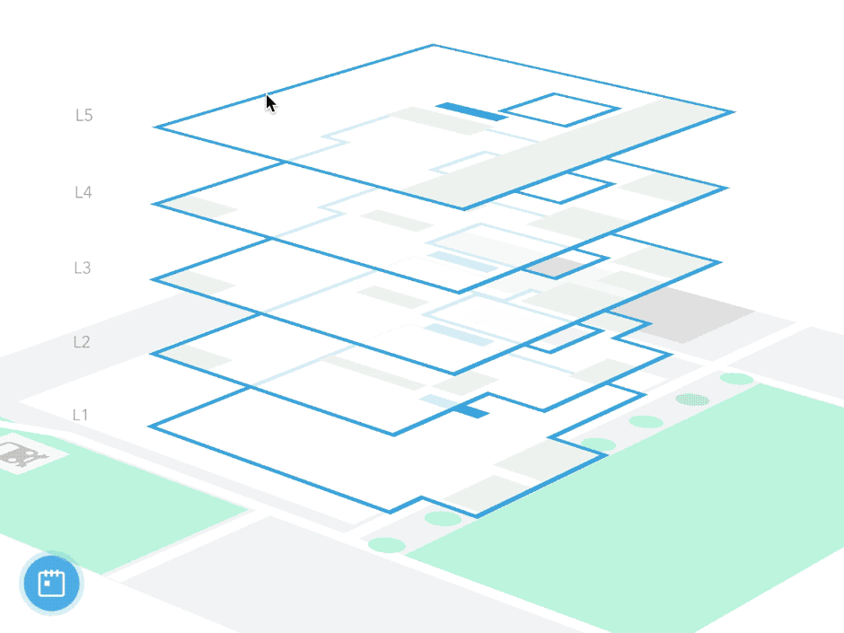
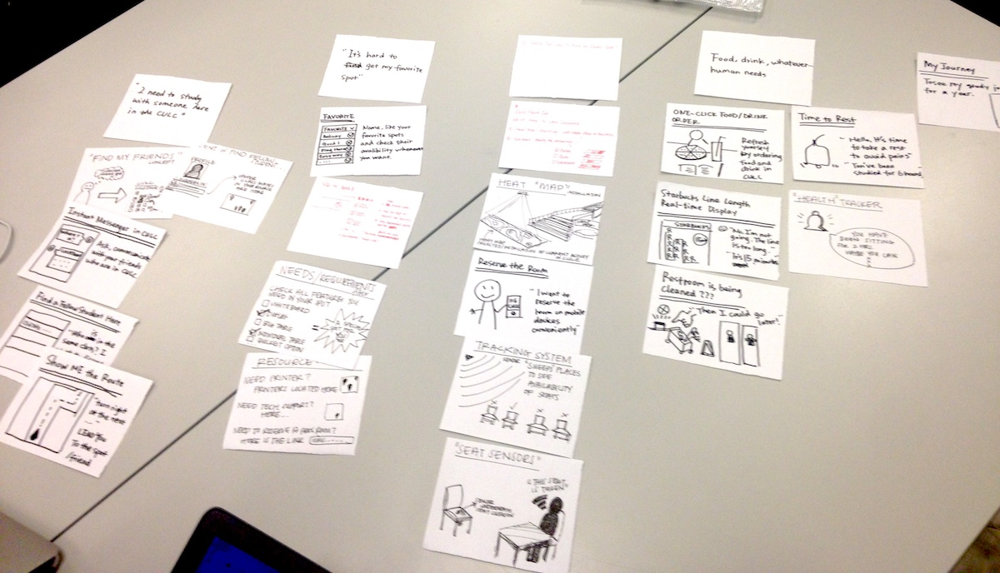
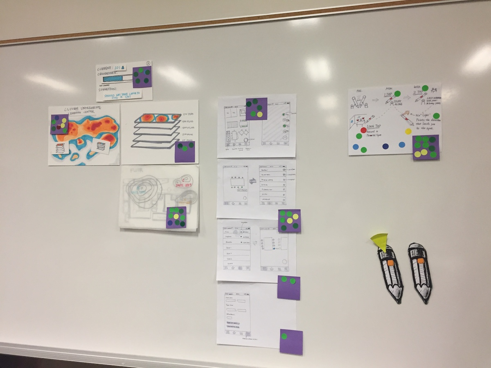
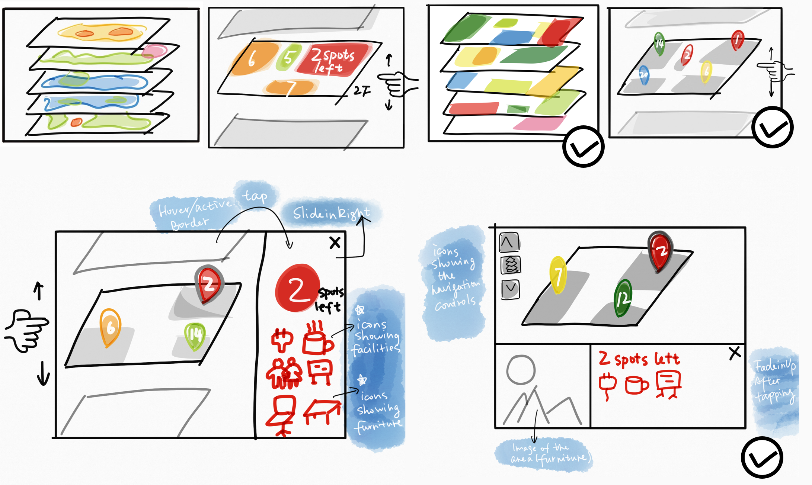

Duration
2016 Fall @ CS8803 Human-Computer Interaction
My Role
At the earlier stage of the project, I was responsible for the user research process from observation to contextual inquiry. During the ideation, I created sketches and storyboard to showcase the ideas. After we decided on our final idea, I was responsible for the design from user flow all the way to the high-fidelity prototype, as well as improvements after user testing.
Methods and Tools
Field Study, Contexual Inquiry, Persona, Storyboard, Hierachy Task Analysis, Sketch, Principle, HTML/CSS/JavaScript
Overview
You have a final next week and you are a little behind on studying for it. Today, you decide to walk into the biggest, central study space on campus, the Clough Undergraduate Learning Commons (CULC), and it feels like half of the student body decide to study there too. You waste time going from floor to floor looking for a spot that meets your needs: a plug point, a white board, and ample table space. After wasting 20 minutes going up and down looking for a spot, you finally settle on a location and try to prepare yourself for the hours of studying ahead of you.
CULC Pal is a kiosk placed at the entrance of CULC to assist students to look for desired spots in a shortest amount of time. With CULC Pal, your frustration and stresses will be eliminated.
RESEARCH
Identify User Needs
The course project started with a broad scope - campus life. We decided to focus on CULC, the building because it's the most important resource on campus. Later we did primary research including observation, contextual inquiry, as well as secondary research including literature research, technology probe, competitiva analysis. The objective was to figure out students' needs in CULC, and gain insights about design opportunities.
Observation: Three unobtrusive observation sessions were conducted at different times of a day. The most important thing we noticed was that many students were roaming through the building and looking for studying spaces with their heavy backpacks or food.
Contextual Inquiry: Then we follow our user research by a contextual inquiry involving 20 people. We first observed a student or a group of students completing a task – looking for a space to study. Then we approached them and ask some semi-structure questions focusing on their procedure of finding a spot and difficulties encountered.
Data Analysis
Affinity Mapping: We had a group session of analyzing the insights based on all the information from the early-stage research. By affinity mapping, we categorized all the data to help identify the patterns.
Task Analysis: We also concluded the characteristics of the task, users’ decision points, desired outcomes and the task environment, expressed the relationships between the parent task and its subtasks by task analysis.
Behavioral Personas: Rather than traditional personas, we built behavioral ones. Because our users are relatively well-defined. We reviewed the data gathered by user research in detail and established five main criteria that users behave differently: Introvert/Extrovert; Closed-minded/Open-minded; Low research/High research; Indecisive/Decisive; Inexperienced/Experienced
Through user research and data analysis, three major pain points emerged.
Problem Space & Design Directions
#1. Difficulty to find empty spots
Students think it a waste of time looking for a spot especially at certain periods like weekday evenings, dead week, days before a break.
#2. Preferences about spots for each individual
Students have preference about spots and each has own search process in different styles.
Design Direction
To help the students look for their desired spots, the design will show the users the real-time availability of study spots in CULC as well as resources and facilities around. These information should be well organized and clearly presented.
#3. Poorly-designed reservation system of rooms
When students can't find an empty spot or when they have special requirement about environment, they turn to reserve a conference room. But right now the reservation system is confusing.
Design Direction
Redesign the existing reservation system and integrate it within navigation system.
IDEATION
Brainstorming
We moved to the design stage to develop a set of design alternatives. Two rounds of brainstorm generated more than 30 ideas. We sorted them into four groups due to their affinity.
Design Alternatives
We proposed three design ideas after combing ideas and narrowing down: a mobile app that addresses overall problems, an installation that presents the activity through a heat map of the building, and a portable hardware that leads users to a spot.
Decision
We invited other target users to participate in a vote session with paper prototypes. Finally, after assessing all the dimensions of all the three solutions, we decided to go further with the heatmap based kiosk.
The two main features of our kiosk come from the design direactions generated based on the problem space. They are helping students find study spots which meet their requirements quicker and letting students reserve instant-approved rooms in CULC.
DESIGN
Design Guidelines
Designing a kiosk is a different paradigm than we, as desktop and mobile application designers and developers, are used to. In order for a kiosk user interface to be “touch-friendly,” it must allow users to navigate comfortably using only their fingers without the need for a mouse and keyboard. There are some principles that I concluded and kept in mind when designing the system. These are concluded from investigating existing kiosks and articles. These principles provided good rationale for a lot of design decisions involved in this sprint.
Simple
As a kiosk, it is not supposed to engage users when they complete a task. I should keep everything simple and easy so that users could complete the task in the minimum steps. Besides, users also tend to not read blocks of text very closely, so I need to substitute large paragraphs of information with icons, pictures, sounds, and animations when possible.
Big Buttons
To prevent “fat finger” problems, I need to make buttons and controls larger with sufficient spacing between each other.
Clean
A cluttered kiosk user interface will distract the user from completing their tasks. Clutter can include any unnecessary elements, which distract users from their intended purpose. So in our design, I avoided soliciting the user for too much information on a single screen.
Motion
The kiosk should be snappy and respond as quick as possible. If users interact with our system, but they find nothing happens, they get confused. If there is some processing or working logic that is happening then some sort of indicator needs to be relayed to users.
Design the Navigation System
Exploration
At last we hoped to prototype Culc Pal and evaluate it. And the prototyping method we chose was HTML5, CSS and JavaScript. So during the design, I communicated closely with my teammate time to time, who acted as the front-end developer, to make sure my designs are feasible. In these frequent back-and-forth conversations, I made explorations of the design mainly by sketching.
During the experiment, I found that a real heat map doesn't fit in our context. Our data documented the availability of each spot and we need to calculate density to generate heat map. But overall the data points are little and we can't generate the heatmap with gradient colors. Besides, heatmap is a holistic visualization, users will get frustrated when they see a green space on the map, which there is actually no study spots.
So I decided to keep to idea of using colors to indicate crowdness by filling in each learning common with colors.
Design after Iteration
During the design and prototyping, I constantly asked friends, students in the CULC for advice on interfaces, interactions, motions (keyframes and duration).
Previously, the navigation system had a blank background. A user expressed his confusion to orient himself. Then I added a map of surroundings consisting of Tech Green and bus station.
Besies, I also decided to use universal icons to symbolize the resources and facilities, but provide a picture of the space to show the furniture. Icons of different furniture are not easy to interpret for users.
Even the floormaps were designed after several iterations for the best comprehension.
Redesign of Reserve-a-Room
As I mentioned, users have issues with the existing design of the “Reserve-a-Room” tool. A typical user always follows the following flow to reserve a room.
But users can rarely succeed in reserving a room because CULC is very busy and rooms are usually reserved at a high rate. If they could see the availability of every room, they could quickly know if they could reserve a room or should they make compromises.

Final Design
Connecting the two functions, I drew the ideal work flow.
PROTOTYPE
Finally, we built the prototype using HTML/CSS/JavaScript. Try it here!
To communicate the motion with my teammate, I built motions in Principle and also actively participated in the front-end development. The floor map are represented by inline SVGs, which I created in Sketch. CSS attributes were applied for transitions to rotate and move the floors. This was done by adding or removing classes. When clicking on a floor, the respective floor map was moved to the center of the window, while others were set to be hidden, and then location pins showed up.
EVALUATION
In usability testing, we aimed to understand how well our target users understand the visualization choices we decided on (icons, color, layout etc) and if they retrieve all of the information they want and need.
Expert Evaluation: Our expert evaluation was on the final presentation of the course. More than 20 experts made their comments on the design. We asked them to evaluate our design by referring to some common heuristics with a focus on usability, understandability, learnability of the system.
User Testing: We invited students to interact with our design on a kiosk placed in the CULC. They were asked to perform two tasks - find a place to study and reserve a room. Task success rate, time on task, errors were documented. Post-test questions focused on their subjective feelings.
What to change
"You are Here": A pin showing the current position of the kiosk would aid users perceive the direction and geographic location better.
Real-time Photos: The pictures of the common areas should be in real-time, so that the crowdedness conveyed by the photo could be consistent with the number of empty seats shown beside the photos. Users feel confused when the actual space and the shown photo are not consistent, because the photo remains the same all the time.
Legend needed: A legend showing the color decoding should be placed in the visualization.
Differentiate unclickable icons and pins: In the detailed view of the floor plans, only the pins for study commons areas were clickable. While pins of restrooms, elevators and shops as well as icons showing the resources were not. During the walk-through, many users tried to click them. They did so because pins were consistent and the icons were so big.